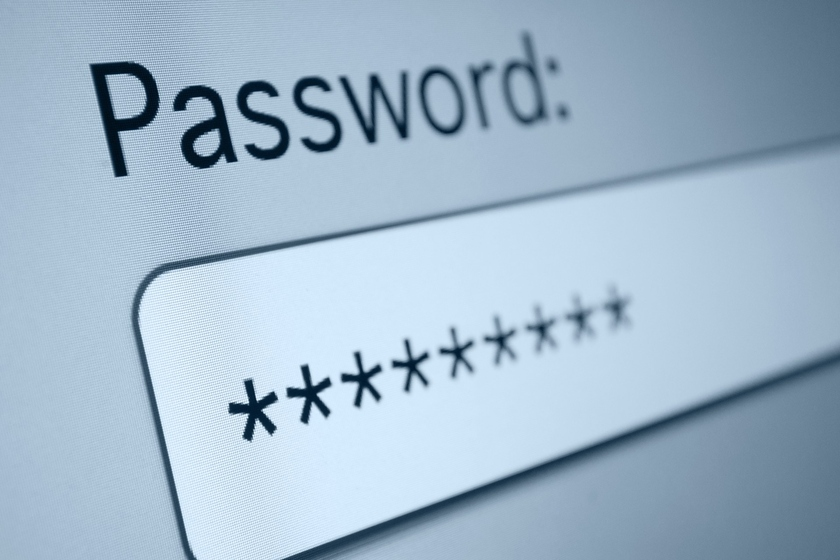

Рекомендации по выбору хорошего пароля составлены для того, чтобы сделать пароль более стойким к разнообразным ухищрениям взломщиков.

Надежный пароль должен соответствовать трем основным правилам.
Последним правилом часто пренебрегают, потому что хотят быстрее запомнить новый пароль. Однако так злоумышленникам будет гораздо проще его подобрать и получить доступ к личным данным.
Важно не только создать надежный пароль, но и защитить его от злоумышленников. Первый и главный — всегда создавать разные пароли для разных интернет-ресурсов. Иначе, узнав пароль от одного из аккаунтов, злоумышленник получит доступ и к остальным. Менять пароль стоит раз в полгода, это особенно важно для личного кабинета банка и почты, аккаунтов облачных сервисов и соцсетей.
Еще одно важное правило, о котором нередко забывают, — никому не сообщать и не отправлять свои пароли. Также, отмечают эксперты Российской системы качества, лучше всего использовать двухфакторную аутентификацию, когда вход в аккаунт необходимо подтвердить с помощью кода, высланного на мобильный телефон пользователя. В таком случае, даже если злоумышленник узнает пароль, он не сможет получить доступ к данным без доступа к телефону.
Рекомендации по выбору хорошего пароля составлены для того, чтобы сделать пароль более стойким к разнообразным ухищрениям взломщиков:
| Примеры слабых паролей | ||
|---|---|---|
| Пароль | Количество использований | Время взлома перебором |
| 123456 | 2543285 | < 1 секунды |
| 123456789 | 961435 | |
| password | 360467 | |
| 111111 | 230507 | |
| 12345 | 188268 | |
| senha | 167728 | 10 секунд |
| picture1 | 371612 | 3 часа |
Теперь Вы знаете как создать надежный пароль! Вернуться на форму регистрации